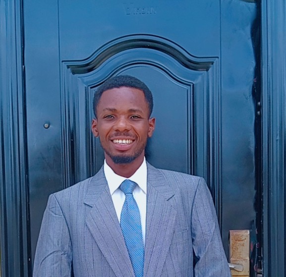

Godstime Wozuame | WDD 130
I am an exceptionally motivated and results-oriented individual with a profound passion for technical support and data analysis. I excel in collaborative environments, where I can apply my skills in customer service and data analysis to facilitate impactful outcomes. My journey in technical support commenced with a unique experience as a branch clerk, wherein I assisted individuals with church account creation, account recovery, and the maintenance of accurate records. This role provided me with invaluable practical experience in problem-solving, critical thinking, and communication, skills that I am enthusiastic to bring into a professional IT setting. This experience instilled within me a strong work ethic and a commitment to continuous learning. I harbor a particular interest in web and software development. I am currently enhancing my knowledge and skills in these domains through my enrollment in the BYU-Pathway Worldwide Software Development Online Degree program. I am enthusiastic about connecting with professionals who share these interests and exploring opportunities for collaboration on meaningful projects. I am actively seeking entry-level IT positions where I can contribute to a progressive organization. I am especially drawn to opportunities that present challenges and allow me to further refine my technical skills. I would welcome the opportunity to connect. I remain open to discussions regarding industry trends, sharing insights, and exploring potential collaborations. Please feel free to reach out to connect.